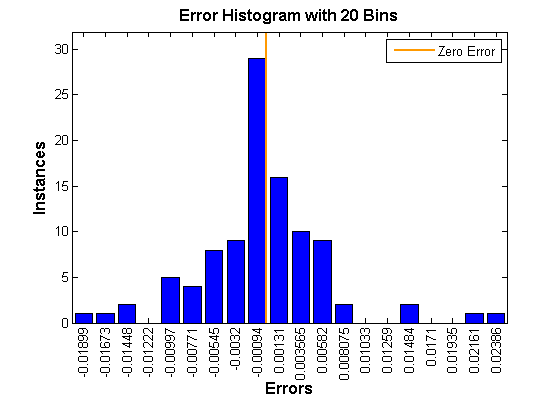

% CSC 301 Scientific Computing Fall 2012 % Author: Yeukhon Wong % Homework #1 % Problem P1.6.1 (p.63) clear; error = zeros(100,1); for n = 1:100 x = randn(5,1); y = randn(5,1); expected = x' * y; x1y1 = convert(dot3(x(1), y(1))); x2y2 = convert(dot3(x(2), y(2))); x3y3 = convert(dot3(x(3), y(3))); x4y4 = convert(dot3(x(4), y(4))); x5y5 = convert(dot3(x(5), y(5))); custom = x1y1 + x2y2 + x3y3 + x4y4 + x5y5; error(n) = expected - custom; end ploterrhist(error) % by default it uses 20 bins